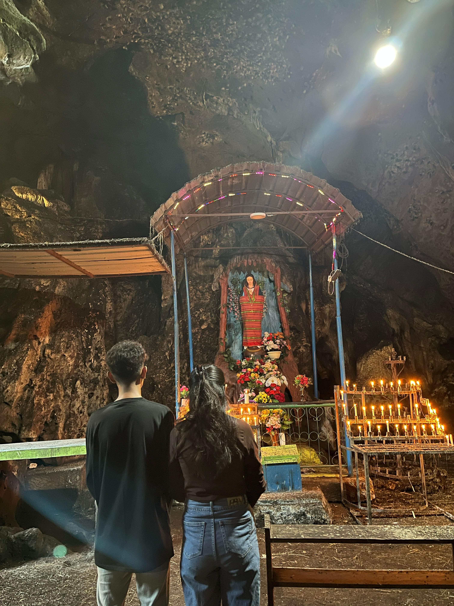
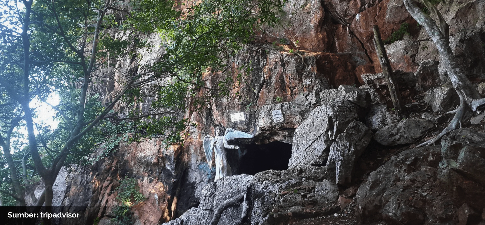
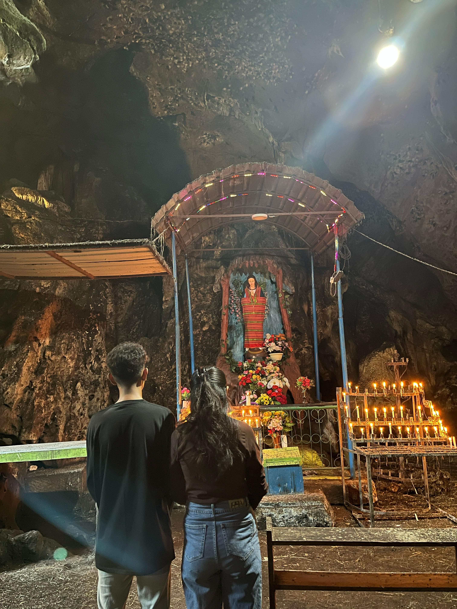
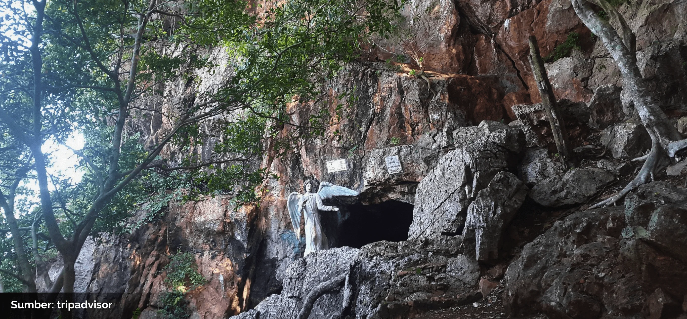

Goa St Maria Bitauni

 



Goa St Maria Bitauni merupakan salah satu tempat ziarah rohani yang populer di TTU. Tempat ini menyuguhkan suasana sejuk dan penuh ketenangan, sangat cocok untuk refleksi dan ibadah umat Katolik, sekaligus menarik bagi wisatawan yang mencintai sejarah dan budaya lokal.
Buka di Google Maps